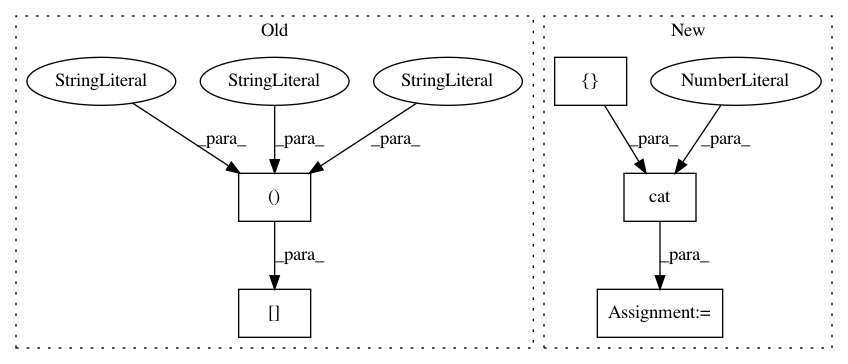

fa6f47e7aee228226421c52e61cce4e1ab4cc099,tests/ml/test_loss.py,,test_permutation_invariant_loss_tf,#,40
Before Change
_loss_a = LossL1(sources, sources).item()
for shift in range(n_sources):
sources_a = sources[:, :, :, shift:]
sources_b = sources[:, :, :, :shift]
shifted_sources = torch.cat(
[sources_a, sources_b], dim=-1)
_loss_b = LossPIT(shifted_sources, sources).item()
After Change
noise_amount = [0.001, .01, .05, 1.0]
for n in noise_amount:
permuted = []
noisy = sources + n * torch.randn_like(sources)
_loss_a = LossL1(noisy, sources).item()
for i in range(n_batch):
p = random.choice(list(permutations(range(n_sources))))
permuted_batch = noisy[i, ..., list(p)].unsqueeze(0)
permuted.append(permuted_batch)
permuted = torch.cat(permuted, dim=0)
_loss_b = LossPIT(permuted, sources).item()
assert np.allclose(_loss_a, _loss_b, atol=1e-6)
def test_combination_invariant_loss_tf():
In pattern: SUPERPATTERN
Frequency: 4
Non-data size: 5
Instances
Project Name: interactiveaudiolab/nussl
Commit Name: fa6f47e7aee228226421c52e61cce4e1ab4cc099
Time: 2020-03-15
Author: prem@u.northwestern.edu
File Name: tests/ml/test_loss.py
Class Name:
Method Name: test_permutation_invariant_loss_tf
Project Name: osmr/imgclsmob
Commit Name: 57c40574673c3d0d35076234d3e55b46a3be5891
Time: 2018-08-23
Author: osemery@gmail.com
File Name: pytorch/models/nasnet.py
Class Name: BranchSeparablesReduction
Method Name: forward
Project Name: allenai/allennlp
Commit Name: 5acb5a785b9ed60743e6f687a96bd92dd4e88578
Time: 2017-11-29
Author: markn@allenai.org
File Name: allennlp/modules/seq2vec_encoders/pytorch_seq2vec_wrapper.py
Class Name: PytorchSeq2VecWrapper
Method Name: forward
Project Name: rusty1s/pytorch_geometric
Commit Name: 653be87728a9420fbd980d0d6024451c892ef721
Time: 2019-01-28
Author: matthias.fey@tu-dortmund.de
File Name: torch_geometric/nn/glob/sort.py
Class Name:
Method Name: global_sort_pool